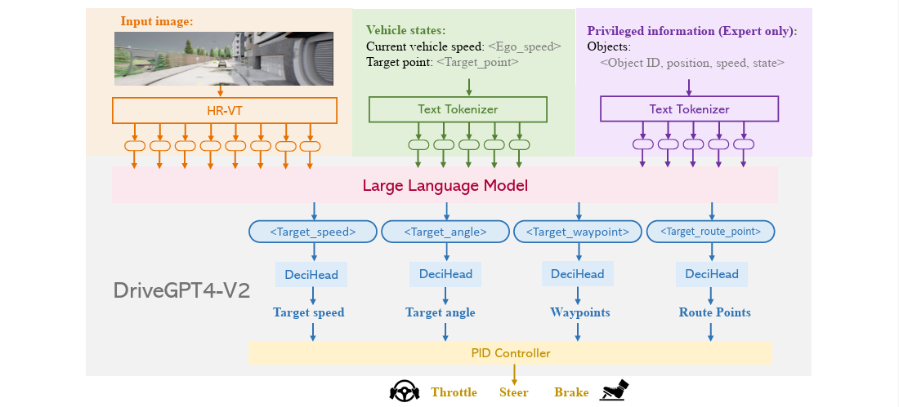

Publications
2025
2025
- Preprint
- Preprint
-  CVPR2025DriveGPT4-V2: Harnessing Large Language Model Capabilities for Enhanced Closed-Loop Autonomous Driving2025 Conference on Computer Vision and Pattern Recognition, 2025
2024
2024
- IV2024PGO-IPM: Enhance IPM Accuracy with Pose-guided Optimization for Low-cost High-definition Angular Marking Map Generation2024
 RAL
RAL 2023
2023
- TASE/ICRA2024FSNet: Redesign Self-Supervised MonoDepth for Full-Scale Depth Prediction for Autonomous DrivingIEEE Transactions on Automation Science and Engineering, 2023
 RAL
RAL  ICRA2023
ICRA2023 2022
2022
-
 ICRA2022 Star-Convolution for Image-Based 3D Object DetectionIn 2022 IEEE/RSJ International Conference on Robotics and Automation (ICRA) , 2022
ICRA2022 Star-Convolution for Image-Based 3D Object DetectionIn 2022 IEEE/RSJ International Conference on Robotics and Automation (ICRA) , 2022
 TGRS
TGRS  RAL/ICRA2022
RAL/ICRA2022 2021
2021
 RAL/IROS2021
RAL/IROS2021  RAM
RAM 2020
2020
 TVCG
TVCG 2018
2018
- IGARSSShadow tracking of moving target based on CNN for video SAR systemIn IGARSS 2018-2018 IEEE International Geoscience and Remote Sensing Symposium , 2018
2017
2017
-
 ICCSPS A new shadow tracking method to locate the moving target in SAR imagery based on KCFIn International Conference in Communications, Signal Processing, and Systems , 2017
ICCSPS A new shadow tracking method to locate the moving target in SAR imagery based on KCFIn International Conference in Communications, Signal Processing, and Systems , 2017